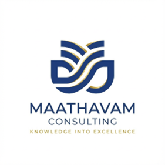
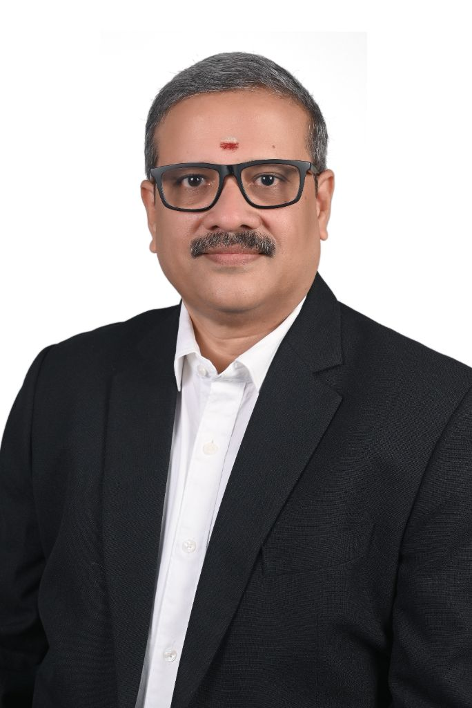

Years of founder experience
Finance, leadership and transformation

YOUR PARTNERS IN TRANSFORMATION
Strategic transformation & fractional CFO leadership.
We help business leaders strengthen finance, transform operations and build the capability to grow.
LEADERSHIP EXPERIENCE ACROSS
Organisations where our leaders have worked
Finance, leadership and transformation
Across advisory and service delivery
Retainer, programme and advisory sprint
01 / OUR EXPERTISE
From your next strategic decision to everyday delivery, engage the support your business needs.
Choose a priority to explore relevant services.
Strategic financial leadership on a fractional basis. Support for growth and funding, board and investor readiness, and high-stakes business decisions.
Discuss this service ↗Change leadership, digital tools and operating model redesign to modernise operations and build resilient, scalable structures.
Discuss this service ↗Programme management and thought leadership support for all your transformation, projects and strategic initiatives.
Discuss this service ↗Working-capital management and cost engineering to improve cash flow, reduce rework and support sustainable growth.
Discuss this service ↗Finance team development, mentoring, competency frameworks and knowledge transfer to support operational continuity.
Discuss this service ↗Independent director services, governance guidance and an executive sounding board to strengthen oversight and stakeholder confidence.
Discuss this service ↗Full-cycle finance and accounting, financial planning and analysis, statutory reporting and compliance, treasury and working-capital management.
Discuss this service ↗HR shared services, talent architecture, workforce design, performance management systems and change leadership and adoption.
Discuss this service ↗End-to-end IT operations, cloud and infrastructure management, cybersecurity and compliance, and 24/7 service desk and support.
Discuss this service ↗Process reengineering, Six Sigma service design, RPA and workflow automation, analytics, and operating model and governance redesign.
Discuss this service ↗Engage one service or a broader mandate. A senior partner remains accountable throughout.
02 / HOW WE WORK
Protect business continuity first. Build improvements in phases, with clear ownership and measurable progress.
Ring-fence day-to-day operations, capture knowledge, shadow key roles and baseline processes and metrics.
Focus: operational continuity and a clear starting point.
Establish a documented playbook for each process. Codify controls, service levels and handoffs, addressing risks before optimisation begins.
Focus: consistent processes, controls and ownership.
Automate high-volume, rules-based work, reduce rework and unit-cost inefficiencies, and redirect effort towards work that requires judgement.
Focus: better processes and capacity for business decisions.
Embed insight and business partnering. Establish continuous improvement and support innovation on a stable operating foundation.
Focus: insight, improvement and strategic partnering.
Discovery session Customised roadmap Phased rollout
FOR SCALING ENTERPRISES
Ongoing financial leadership, board-ready reporting and oversight on a fractional cadence.
Discuss a retainer ↗FOR SIGNIFICANT CHANGE
A defined change programme with milestones, governance and outcomes owned end to end.
Discuss a programme ↗FOR A FOCUSED START
A targeted cost and cash review, ERP readiness assessment or finance function diagnostic.
Discuss a sprint ↗Embedded collaboration, flexible scope and senior ownership. Outcome-aligned commercial models are available.
03 / THE PEOPLE BEHIND THE WORK
Every mandate is supported by senior finance and transformation specialists with global experience.

FOUNDER & MANAGING PARTNER
Finance, Programme Management & Transformation Leader
30+ years across consulting, Cognizant, Shell, Standard Chartered, Maersk and Agility. Rajkumar helps CXOs turn finance into a strategic business partner, combining financial leadership with end-to-end transformation delivery.
His experience includes shared-services turnarounds, cost optimisation, automation, organisational restructuring and the DSV Panalpina–Agility integration. He builds resilient teams and governance frameworks supporting operational excellence and stakeholder value.
CREDENTIALS & GOVERNANCE
23+ YEARS · ACA · SIX SIGMA
Finance & accounting operations
Genpact · IBM · Agility
Service delivery leadership, process optimisation and high-performance teams.
22+ YEARS · ACA
Business finance & shared services
Cognizant · Standard Chartered · Maersk · Accenture
Metrics and scorecards, business finance partnering, systems integration and shared services delivery.
22+ YEARS · ACA · LEAN SIGMA
Finance shared services & process excellence
Trane Technologies · Philips · Cognizant · Shell
Record-to-report, FP&A, budgeting and analysis, Lean process excellence and global teams of 60+ members.
04 / EXPERIENCE IN ACTION
Experience across technology, energy, banking and logistics, applied to the challenges in front of you.
Turned around shared-services performance and engagement scores.
Delivered cost goals through reengineering and continuous improvement.
Built knowledge bases and career paths across global operations.
Moved shared services from transactional delivery to business partnering.
MANDATES FEATURED IN OUR JULY 2026 PROFILE
Data masking CFO MANDATE
Data & analytics CFO MANDATE
Logistics SaaS CFO MANDATE
Digital marketing TRANSFORMATION
The professionalism and dedication you have shown helped us to finalize the integration with success.
05 / LET’S START A CONVERSATION
Tell us where you are and what needs to change. We’ll discuss how Maathavam can support your next step.